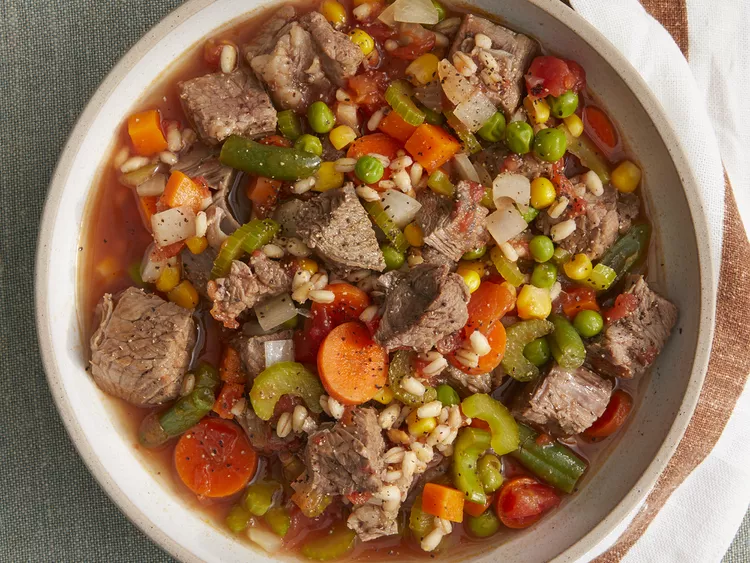

Beef Barley Vegetable Soup

Description
Make beef barley soup in the slow cooker for an easy, filling meal. Serve with hearty bread, and enjoy.
Prep Time: 20 mins. Cook Time: 4 hrs 15 mins. Total Time: 4 hrs 35 mins. Servings: 10
Ingredients
- 1 (3 pound) beef chuck roast
- ½ cup barley
- 1 bay leaf
- 2 tablespoons oil
- 3 carrots, chopped
- 3 stalks celery, chopped
- 1 onion, chopped
- 1 (16 ounce) package frozen mixed vegetables
- 4 cups water
- 1 (28 ounce) can chopped stewed tomatoes
- 4 cubes beef bouillon cube
- 1 tablespoon white sugar
- ¼ teaspoon ground black pepper, or more to taste
- salt to taste
Steps
- Place chuck roast in a slow cooker. Cook on High until tender, 4 to 5 hours. Add barley and bay leaf during the last hour of cooking.
- Remove meat; chop into bite-size pieces. Discard bay leaf. Set beef, broth, and barley aside.
- Heat oil in a large stock pot over medium-high heat. Sauté carrots, celery, onion, and frozen mixed vegetables until tender, 5 to 7 minutes.
- Add water, stewed tomatoes, beef bouillon cubes, sugar, 1/4 teaspoon pepper, and beef-barley-broth mixture. Bring to boil, reduce heat, and simmer 10 to 20 minutes.
- Season with salt and pepper before serving.